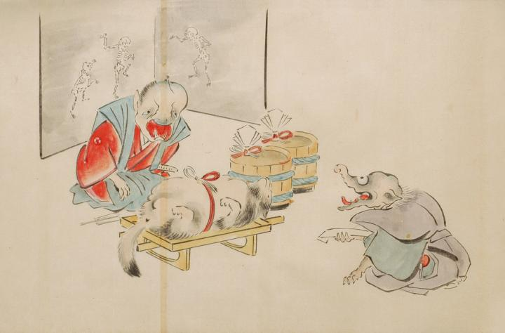

結納の使者が婚家へ口上の挨拶に参じた場面。紅白の水引で飾った一対の樽。白木台に仰向けに寝かされた狸を挟んで、2体の化物が相対している。手前が結納の使者。羽織袴姿で顔は象のように鼻が長く、口は耳まで裂けている。そして正座をし、口上を述べている。奥には3体の骸骨が描かれた衝立を背にして正座した化物が口上を受けている。大きく開かれた口からは、2本の鋭い牙が覗いている。
出典：親書誌：U426_nichibunken_0053：化物婚礼絵巻；バケモノコンレイエマキ／日付：2006／資源識別子：U426_nichibunken_0053_0007_0000
Copyright (c)2010- International Research Center for Japanese Studies, Kyoto, Japan. All rights reserved.